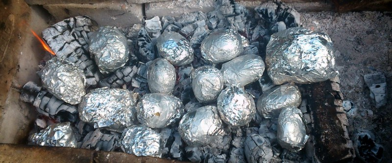

Картофель в фольге на огне

- TODO
Разести огонь и дождаться углей. Хорошенько помыть не очень крупную картошку. Каждую в отдельности завернуть в фольгу.
Выложить картошку на угли и готовить 15 минут с одной стороны,затем перевернуть на другой бок щипцами и еще 15 минут.
Готовый картофель подавать с соусом для картошки.
 Назад к списку рецептов
Назад к списку рецептов